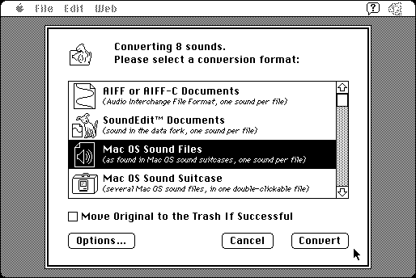

Download
snd-converter-pro-241.zip (283K) SndConverter Pro 2.4.1 repackaged into a zipped hfs disk image and checksum file. The disk image can be mounted with Mini vMac.
snd-converter-pro-241.hqx (389K) SndConverter Pro 2.4.1 in the original format.
copyright: David Sinclair
mod date: Jan 29, 2001
license: former shareware, now free
official url :
Dejal - Classic
“Allows you to convert batches of sounds from one format to another”. “Requires Mac OS 7.0 or above”. “Registered Name: Dejal Systems”, “Registration Code: 841014463844”.

If you find these downloads useful, please consider helping the Gryphel Project, which hosts them.
Here are the md5 checksums for the downloads, signed with Gryphel Key 5:
--------- GRY SIGNED TEXT --------- 4b859e9700a68e42dc7cd4aa345af4f5 snd-converter-pro-241.zip a45bb7d757f8847293240fc82344272f snd-converter-pro-241.hqx ------- BEGIN GRY SIGNATURE ------- Gry/4Xa8CFcUzxdN/MmAxXHswuf3ZASB01w4Ct+n1J00jpgbUUe0Eso+btGk8uzM PlTsAI2oxG0YY4XCxL+CBJb7MV5DdFLTY6q111hnc6HERLyx8yjWF6U1x79HMjH1 rcZVg+ParY7an1yjzQul69kOZ8b/ZSAm07pyC0N3gZ30xWqySe2lu0goyx4Zb+7L -------- END GRY SIGNATURE --------